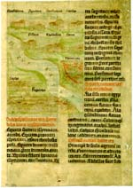

Notitia dignitatum utriusque imperii Romani. Fragment: kopie van een Romeinse kaart van vestigingen aan de Eufraat. Latijn. Handschrift op perkament, 2 ff., 305 x 215 mm. Duitsland (Speyer?), einde van de vijftiende eeuw. -- (BPL 2869)
De Notitia dignitatum utriusque imperii Romani, ook wel correcter Notitia dignitatum omnium tam civilium quam militarium genoemd, geeft een overzicht van de burgerlijke en militaire functies in het Romeinse rijk en werd vermoedelijk oorspronkelijk opgesteld toen dat in het jaar 395 in twee delen werd gesplitst. Het werk ontleent vooral zijn betekenis aan de talrijke illustraties, waaronder ook een aantal landkaarten zoals de hier getoonde kaart van de vestigingen langs de Eufraat op folio 1v.
Ofschoon van veel later datum, geeft het Leidse fragment nog een indruk van de Romeinse cartografie, waarbij het kaartbeeld geheel vanuit de bevaren rivieren en gevolgde wegen is opgebouwd, terwijl de ruimtelijke ligging maar heel gebrekkig is weergegeven. Het vertoont echter nogal wat afwijkingen van het model waarop het direct of indirect teruggaat, een tiende-eeuws handschrift, dat het Romeins karakter van zijn bron voortreffelijk had vastgehouden. Maar dit handschrift, dat in de vijftiende eeuw in de Dom te Speyer berustte, ging op een enkel blad na verloren, zodat wij thans zijn aangewezen op late kopieën die vooral door humanisten zijn vervaardigd.
Literatuur
- P.F.J. Obbema, ‘Een onbekend fragment van de Notitia dignitatum', in: De arte et libris. Festschrift Erasmus, 1934-1984. Amsterdam 1984, p. 343-348.
- Vergelijk: Texts and transmission. A survey of the Latin classics. Ed. by L.D. Reynolds. Oxford 1983, p. 253-257.
| vorige pagina | top pagina |